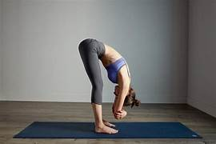
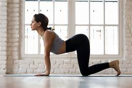
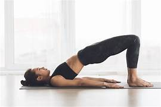

This stretch helps to improve the flexibility of your hamstrings and lower back. Stand with feet together and slowly bend forward to touch your toes.
A great warm-up exercise to loosen up your spine. Alternate between arching your back upwards like a cat and dipping it downwards like a cow.
Sit on the floor, bring the soles of your feet together, and gently press your knees towards the floor. This targets your inner thighs and hips.
This stretch opens up your chest and strengthens your back. Lie on your back, bend your knees, and lift your hips towards the ceiling.
Lie on your stomach, place your palms on the floor under your shoulders, and gently lift your chest upwards. Great for improving spinal flexibility.